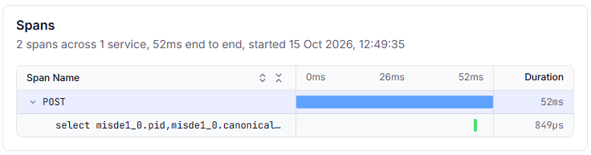
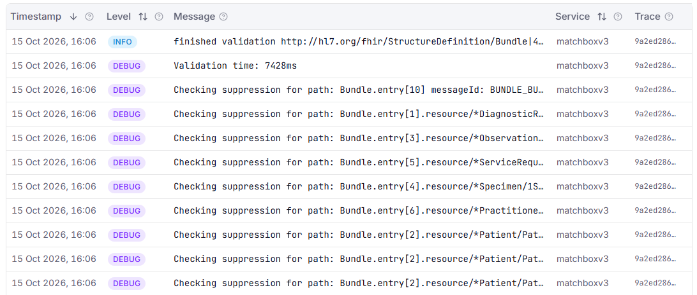
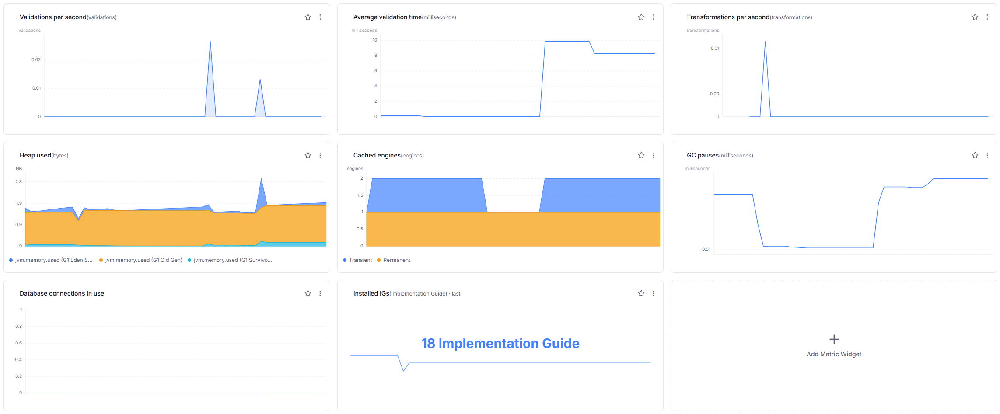

Originally published on ahdis.ch on 19 October 2026.
If you run Matchbox as a shared FHIR validation service, sooner or later someone will ask how many resources you validate, why some $validate calls are so slow, or whether the server is running out of memory.
Recent Matchbox releases can answer these questions themselves by exporting metrics, traces and logs with OpenTelemetry.
In this tutorial, you'll turn that on, send the data to Traceway (a simple and standalone monitoring platform) and set up a dashboard and alerts for your Matchbox server.
You'll need Docker with Docker Compose, and a shell with curl and openssl.
You don't need any prior experience with OpenTelemetry or Traceway.
What Matchbox measures
Matchbox produces three kinds of telemetry. Metrics are numbers tracked over time, like the number of validations per minute. Traces record a single request step by step: each step, such as a database query, is a span with its own duration. Logs are the messages Matchbox writes as it works, like the ones you see in its console.
Within metrics, we distinguish three types of data:
- Counters are running totals that only ever go up, like the number of validations since Matchbox started. What you usually chart is how fast they grow, e.g. validations per second.
- Timers measure how long something takes, each time it happens. A timer also counts the events it measures, so
matchbox.validation.durationgives you both the number of validations and their total, average and maximum duration. - Gauges hold a current value that can go up or down, like the heap memory in use or the number of cached engines. Matchbox reads the value each time it exports metrics.
Matchbox gets most of this from the OpenTelemetry Spring Boot starter, a library that adds OpenTelemetry to Spring Boot applications. On top of that, Matchbox adds a few metrics of its own.
Spring Boot metrics
Matchbox is a Spring Boot application, and Spring Boot already measures a lot about itself through Micrometer, its built-in metrics library.
When otel.instrumentation.micrometer.enabled=true is set, the starter forwards all of these metrics to OpenTelemetry under the same names.
The most useful ones for a Matchbox server are:
jvm.memory.used(gauge): memory in use, in bytes, per memory pool. Theareatag separatesheapfromnonheapmemory, andidnames the pool.jvm.memory.maxgives the matching limits.jvm.memory.usage.after.gc(gauge): the share of long-lived heap memory still in use after the last garbage collection, from 0 to 1. This is the best single sign that Matchbox is running out of memory.jvm.gc.pause(timer): garbage-collection pauses. During a pause, the JVM stops all other threads, so requests have to wait.process.cpu.usageandsystem.cpu.usage(gauges): the CPU used by Matchbox and by the whole host, from 0 to 1.jdbc.connections.active,jdbc.connections.idleandjdbc.connections.max(gauges): connections in the database connection pool. Ifactivestays atmax, requests are waiting for a free connection. In Matchbox, the pool is only reported under these names, not under HikariCP's ownhikaricp.connections.*.http.server.requests(timer): incoming HTTP requests, tagged with method, status anduri. HAPI FHIR serves the FHIR API through its own servlet instead of Spring MVC, so Spring can't tell the FHIR endpoints apart: they all end up underuri=UNKNOWN. Only Spring's own endpoints, such as Actuator's, get their real path.logback.events(counter): log events, tagged bylevel. A sudden rise inerrorevents is often the first sign that something is wrong.
Spring Boot also reports thread counts, Tomcat sessions, free disk space and more.
To see the complete list on your server, call /matchboxv3/actuator/metrics.
The starter also takes a few measurements of its own, named after OpenTelemetry's conventions. These are exported as soon as OpenTelemetry is on, even without the Micrometer setting:
http.server.request.duration(timer): incoming HTTP requests, tagged with method and status code. Likehttp.server.requests, it counts the FHIR requests but doesn't break them down by endpoint. For validation times,matchbox.validation.durationis more precise.- JVM metrics such as
jvm.memory.used,jvm.gc.duration,jvm.thread.countandjvm.cpu.time. They overlap with Micrometer's JVM metrics, and two of them even share a name (jvm.memory.usedandjvm.memory.committed), but with different tags:jvm.memory.typeandjvm.memory.pool.nameinstead ofareaandid. A filter onareaonly matches Micrometer's version. If you don't need both, turn off the starter's version withotel.instrumentation.runtime-telemetry.enabled=false.
Matchbox's own metrics
The following metrics can be enabled by setting otel.instrumentation.micrometer.enabled=true in your configuration.
matchbox.validation.count(counter): number of FHIR resources validated, through either the FHIR$validateoperation or the Gazelle validation API (used by IHE's Gazelle test tools).matchbox.validation.duration(timer): how long each validation took.matchbox.transformation.count(counter): number of resources transformed withStructureMap/$transform.matchbox.engines.cached.permanent.numberandmatchbox.engines.cached.transient.number(gauges): how many validation engines Matchbox holds in memory. An engine is a validator loaded with a particular set of ImplementationGuides (IGs). Matchbox caches engines so it doesn't rebuild them for every request. Permanent engines stay cached; transient engines expire automatically after an hour.matchbox.engines.creating.number(gauge): how many engines Matchbox is building right now.matchbox.igs.number(gauge): number of installed IGs.matchbox.engines.fetch.cache.size(gauge, from Matchbox v5.0.0): the sum of all resources stored in the engines' fetch cache, that is configurable withMatchboxEngine.setFetchCacheMaxSize(int).
Traces
The starter traces every incoming HTTP request, along with the database queries Matchbox runs while handling it.
Each request becomes one span, with attributes such as the URL path (url.path), the query parameters (url.query, e.g. the profile to validate against) and the HTTP status.
HAPI FHIR does its own routing instead of Spring MVC, so these spans carry the concrete URL path but no route template.
In Traceway, that means one endpoint per path: one for POST /matchboxv3/fhir/Patient/$validate, another for POST /matchboxv3/fhir/Observation/$validate, and so on.
Calls to the terminology server and package downloads aren't traced, because the validator makes them with HTTP clients that the starter doesn't instrument. Their time counts toward the request's duration, but you can't see it separately. Matchbox doesn't add spans of its own yet either, so a trace tells you which validations are slow, not why.
Database queries that run outside a request, at startup or in HAPI FHIR's background jobs, are exported too, but Traceway drops them because they don't belong to any endpoint.

Logs
Matchbox also sends its logs.
The starter hooks into Logback, the logging library Matchbox uses, and exports every log event as soon as OpenTelemetry is on, with no further setting.
Matchbox still writes the same lines to its console, so docker compose logs keeps working.
Each record carries its level, its message and the name of the logger that wrote it, e.g. ch.ahdis.matchbox.engine.MatchboxEngine.
Only what Logback lets through is exported: INFO and above by default.
The levels you set under logging.level apply to the console and the export alike.
Expect a burst of a couple of hundred records at startup.
Logs written while Matchbox handles a request carry that request's trace ID, which ties them to the request.
For a $validate request, these are lines such as "Using profile for validation …" and "finished validation …", plus any error, for example when the requested IG isn't installed.
They also tell you whether Matchbox reused a cached engine ("Using cached validate engine for …") or had to build one ("Creating new validate engine for …"), which the trace alone can't show.
In Traceway, these lines appear in the Logs card of the endpoint's detail page, under This Trace.
All logs, whether they're part of a trace or not, including the startup ones, are on the project's Logs page.

Gen-AI metrics (optional)
Matchbox can ask an LLM to analyze failed validations ("AI-assisted validation").
If you use that feature, Matchbox also records how many tokens each LLM call used (gen_ai.client.token.usage) and how long it took (gen_ai.client.operation.duration), broken down by provider, model, and input vs. output tokens.
To set up AI-assisted validation, see the Validation with AI tutorial.
Where the data goes
OpenTelemetry (OTel) is an open standard for collecting metrics, traces and logs, and most monitoring tools support it. Matchbox sends its data over OTLP, OpenTelemetry's network protocol.
In this tutorial, that data goes to Traceway, an MIT-licensed observability platform. We picked it because its configuration is minimal, and deployment is easy: Traceway is a single container image; it receives OTLP directly, stores everything in SQLite, DuckDB or PostgreSQL, and has dashboards and alerting built in. This makes it a good solution for experimentation with telemetry. The usual self-hosted stack is an OpenTelemetry Collector plus one store per kind of data, such as Prometheus for metrics, Jaeger or Tempo for traces and Loki for logs, with Grafana on top for dashboards and alerts. That's several services to set up and wire together, but once that is done, they are much more powerful.
Nothing on the Matchbox side depends on Traceway, though. Matchbox only speaks standard OpenTelemetry, so this setup works the same with any backend that accepts OTLP, whether that's your own Grafana stack or a hosted service such as Grafana Cloud, Honeycomb or Dynatrace. To switch, you change the endpoint and the credentials. Matchbox sends the same metrics, traces and logs either way, although some backends adapt the names to their own conventions: Prometheus, for example, replaces the dots with underscores by default. What does differ from tool to tool is how you build dashboards and alerts, so treat the Traceway screens in Steps 4 and 5 as a guide to what to watch, not as exact instructions.
Step 1: Start Traceway and create a project
Matchbox needs a Traceway project token before it can send anything, so start Traceway first.
In an empty directory, create a docker-compose.yml file:
services:
traceway:
image: ghcr.io/tracewayapp/traceway:sqlite
ports: ["80:80"]
volumes: ["./traceway-data:/data"]
environment:
JWT_SECRET: ${JWT_SECRET}
# The default cache is sized for machines with 16 GB+
SQLITE_CACHE_SIZE_MB: "64"
This is Traceway's single-container image, which stores everything in SQLite under ./traceway-data.
JWT_SECRET signs Traceway's login sessions and must be at least 32 characters long.
Generate one into a .env file, which Docker Compose reads automatically, and start Traceway:
echo "JWT_SECRET=$(openssl rand -hex 32)" > .env
docker compose up -d traceway
Then set up Traceway in your browser:
- Open
http://localhost/registerand create an account. The first account becomes the owner of the organization. - In the header, open the project selector and select Add Project.
- Name the project
Matchbox, choose the OpenTelemetry framework, and select New Project. - Traceway shows the project's token. Add it to your
.envfile:
echo "TRACEWAY_TOKEN=<your project token>" >> .env
If you lose the token, you can find it again on the project's Connection page.
Step 2: Enable telemetry in Matchbox
Telemetry is off by default.
The stock application.yaml contains:
otel:
sdk:
disabled: true
On top of that, Matchbox only registers its own metrics when otel.instrumentation.micrometer.enabled is true.
So nothing gets exported until you opt in.
Add Matchbox to your docker-compose.yml, under services:
matchbox:
image: europe-west6-docker.pkg.dev/ahdis-ch/ahdis/matchbox:latest
ports: ["8080:8080"]
environment:
OTEL_SDK_DISABLED: "false"
OTEL_SERVICE_NAME: matchbox
OTEL_EXPORTER_OTLP_ENDPOINT: http://traceway/api/otel
OTEL_EXPORTER_OTLP_HEADERS: "Authorization=Bearer ${TRACEWAY_TOKEN}"
OTEL_INSTRUMENTATION_MICROMETER_ENABLED: "true"
OTEL_METRIC_EXPORT_INTERVAL: "15000"
Here's what each setting does:
OTEL_SDK_DISABLED=falseturns on OpenTelemetry. From then on, Matchbox exports traces and logs, with no further setting.OTEL_SERVICE_NAMEis the name Traceway shows for this server.OTEL_EXPORTER_OTLP_ENDPOINTpoints at Traceway. It must end in/api/otel: without/api, Traceway's web interface answers instead, and the data silently disappears.OTEL_EXPORTER_OTLP_HEADERSsends the project token, so Traceway knows which project the data belongs to.OTEL_INSTRUMENTATION_MICROMETER_ENABLED=trueforwards Spring Boot's metrics and turns on the Matchbox-specific ones.OTEL_METRIC_EXPORT_INTERVAL=15000sends metrics every 15 seconds instead of every 60, so you see data sooner.
Start Matchbox:
docker compose up -d matchbox
If no data shows up in Traceway a minute after Matchbox has started, check docker compose logs matchbox for export errors.
A 401 means the token is missing or wrong.
Outside of this tutorial, you'll probably keep these settings in an override file instead.
Spring Boot merges it over the defaults; with Docker, mount it at /config/application.yaml.
Each environment variable above maps to a key in that file:
otel:
sdk:
disabled: false
service:
name: matchbox
exporter:
otlp:
endpoint: https://traceway.example.com/api/otel
headers:
Authorization: Bearer <your project token>
instrumentation:
micrometer:
enabled: true
metric:
export:
interval: 15000 # milliseconds
A few notes:
- Metrics only. Traces and logs are exported as soon as OpenTelemetry is on. To turn them off, add
OTEL_TRACES_EXPORTER=noneandOTEL_LOGS_EXPORTER=none(otel.traces.exporter: noneandotel.logs.exporter: nonein the file). - Sampling. By default, Matchbox sends every trace. On a busy server, you can keep only a share of them by adding
OTEL_TRACES_SAMPLER=parentbased_traceidratioandOTEL_TRACES_SAMPLER_ARG=0.1(keeps 10 %). Keep in mind that Traceway computes endpoint latency and error rates from the traces it receives, so with sampling, those numbers are based on a subset of requests. - Actuator works without OpenTelemetry. Spring Boot Actuator, Spring Boot's built-in management endpoints, serves
/matchboxv3/actuator/metricseven withotel.sdk.disabled=true. That's handy for a quick check. The settings above add the export to Traceway and the Matchbox-specific metrics. - Context path. All Actuator endpoints live under the Matchbox context path, e.g.
http://localhost:8080/matchboxv3/actuator/health.
Step 3: Generate some load
Matchbox needs an ImplementationGuide to validate against.
These examples use hl7.fhir.r4.core, which is always installed.
MB=http://localhost:8080/matchboxv3
PROFILE=http://hl7.org/fhir/StructureDefinition/Patient
# A valid Patient
curl -s -X POST "$MB/fhir/Patient/\$validate?profile=$PROFILE" \
-H 'Content-Type: application/fhir+json' \
-d '{"resourceType":"Patient","name":[{"family":"Test"}],"gender":"other"}'
# An invalid one — wrong data type for name
curl -s -X POST "$MB/fhir/Patient/\$validate" \
-H 'Content-Type: application/fhir+json' \
-d '{"resourceType":"Patient","name":"Test"}'
The backslash in \$validate stops the shell from treating $validate as a variable.
Two requests won't make an interesting graph, so send a couple of hundred more:
for i in $(seq 1 200); do
curl -s -o /dev/null -X POST "$MB/fhir/Patient/\$validate" \
-H 'Content-Type: application/fhir+json' \
-d '{"resourceType":"Patient","name":"Test"}'
done
For a heavier, sustained load, the Matchbox repository also includes a JMeter test plan in its jmeter/ directory.
Step 4: Read the results
4a. Actuator, for a quick look
curl -s $MB/actuator/metrics/matchbox.validation.duration
{
"name": "matchbox.validation.duration",
"description": "Duration of FHIR resource validation by Matchbox",
"baseUnit": "seconds",
"measurements": [
{ "statistic": "COUNT", "value": 28 },
{ "statistic": "TOTAL_TIME", "value": 34.953 },
{ "statistic": "MAX", "value": 20.833 }
]
}
So far, Matchbox has run 28 validations, taking 35 seconds in total, and the slowest one took almost 21 seconds.
curl -s $MB/actuator/metrics/matchbox.engines.cached.permanent.number
{
"name": "matchbox.engines.cached.permanent.number",
"description": "Number of cached immutable Matchbox engines in the server",
"baseUnit": "engines",
"measurements": [ { "statistic": "VALUE", "value": 3 } ]
}
That confirms Matchbox is recording metrics.
Now switch to Traceway at http://localhost.
4b. Latency and errors: the Endpoints page
Traceway turns incoming HTTP requests into endpoints, named after their method and route, and shows latency percentiles, throughput and error rate for each one. Endpoints are ranked by an impact score that combines latency, errors and volume, so the ones that hurt the most come first.
Open Endpoints in the Matchbox project and find the $validate endpoints, one per resource type, such as POST /matchboxv3/fhir/Patient/$validate.
This is where you get validation percentiles.
The p95, for example, is the time within which 95 % of validations finish.
Traceway computes percentiles from traces, not from metrics, which is why the dashboard below only shows average durations.
4c. Traces: one request in detail
Click one of the $validate endpoints to open its detail page.
The Spans waterfall shows a single request step by step: the top line is the whole request, and the indented lines are the database queries Matchbox ran while handling it, labelled with their SQL.
For most validations, the waterfall is a single line:
POST /matchboxv3/fhir/Observation/$validate 296 ms
Matchbox found everything it needed in a cached engine, so it didn't query the database. When a validation has to look something up in the package database, for instance to find the IG that defines the requested profile, the queries appear underneath:
POST /matchboxv3/fhir/Patient/$validate 9.4 ms
├─ select npvre1_0.pid, … from npm_package_ver_res … join … 0.1 ms
└─ select npvre1_0.pid, … from npm_package_ver_res … join … 0.1 ms
In the first example, most of the 296 ms went to checking a LOINC code on tx.fhir.org, but nothing in the trace says so: the terminology call is hidden inside the request's duration. Validating the same resource a second time took 18 ms, because Matchbox caches terminology results.
So use traces to find the slow requests, and their url.query attribute to see which profile they were validated against.
If the same validation is slow the first time and fast afterwards, Matchbox was either building a validation engine or waiting for the terminology server, and caches both.
The Logs card below the waterfall tells you which: it shows whether the request created a new engine.
4d. A Matchbox dashboard
Traceway shows metrics in dashboards made of widgets.
You configure each widget in the interface by picking a metric, an aggregation such as avg or last, and optional tag filters or a group-by.
Three things to know about how Matchbox's metrics look in Traceway:
- Names keep their dots, e.g.
matchbox.validation.count. - Counters arrive as running totals. Use the
rateaggregation to turn them into "per second". - Timers arrive as histograms, which Traceway reduces to
<name>.avg(average duration) and<name>.count(number of measurements). Traceway doesn't keep the histogram buckets, so for percentiles, use the Endpoints page.
Open the dashboard picker (⌘K, or Ctrl K on Windows and Linux), create a dashboard for the Matchbox project, and add these widgets:
- Traffic
- Validations per second: line chart of
matchbox.validation.count, aggregationrate. - Transformations per second: line chart of
matchbox.transformation.count, aggregationrate.
- Validations per second: line chart of
- Latency
- Average validation time: line chart of
matchbox.validation.duration.avg, aggregationavg.
- Average validation time: line chart of
- Capacity
- Heap used: stacked area of
jvm.memory.used, filtered onarea=heap, grouped byid(one band per memory pool). - GC pauses: line chart of
jvm.gc.pause.avg, aggregationavg. - Database connections in use: line chart of
jdbc.connections.active, aggregationlast.
- Heap used: stacked area of
- Matchbox internals
- Cached engines: stacked area of
matchbox.engines.cached.permanent.numberandmatchbox.engines.cached.transient.number, aggregationlast. This one needs JSON, see below. - Installed IGs: single value of
matchbox.igs.number, aggregationlast.
- Cached engines: stacked area of
The widget editor only lets you pick one metric per widget.
A widget can hold several sources, though, and a stacked area piles them on top of each other.
To add the cached-engines widget, open the dashboard tab's menu, select Edit as JSON, and add this entry to the widgets array:
{
"title": "Cached engines",
"widgetType": "stacked_area",
"config": {
"sources": [
{ "type": "metric", "name": "matchbox.engines.cached.permanent.number", "aggregation": "last", "label": "Permanent" },
{ "type": "metric", "name": "matchbox.engines.cached.transient.number", "aggregation": "last", "label": "Transient" }
]
}
}
Traceway generates the widget's id when you save.
The label fields name the two bands.
Here's the result of such a dashboard. Traceway's dashboards are simpler than Grafana's. The rate aggregation, for instance, is always per second, which is too fine for events as rare as validations. Still, the dashboard gives a good overview of the Matchbox server.

4e. Gen-AI usage
If AI-assisted validation is enabled, each failed $validate that triggers an LLM analysis also records token usage.
The token metric is a histogram too, so Traceway shows it as two metrics:
gen_ai.client.token.usage.avg: average tokens per LLM call. Group bygen_ai.token.typeto split input and output tokens.gen_ai.client.token.usage.count: number of LLM calls. Useratefor calls per second.
Average tokens per call times the number of calls, times your provider's per-token price, gives you an estimate of what AI-assisted validation costs you.
For LLM latency, chart gen_ai.client.operation.duration.avg.
Step 5: Alerts worth having
In Traceway, you create alert rules in the interface, under Alerts. Each rule sends its notifications to one channel, such as email, Slack or a webhook, so set up a channel first. These three rules cover the basics; adjust the thresholds to your traffic:
- Server errors. Type Error Rate, with a threshold of 5 %. This counts server errors (HTTP 5xx) on all endpoints.
- Heap pressure. Type Metric Threshold, on
jvm.memory.usage.after.gc, with aggregationmax, operatorgt, threshold0.9and a lookback of 15 minutes. This metric is the share of long-lived heap memory still in use after garbage collection, from 0 to 1, so it fires when the JVM is close to running out of memory. - Matchbox has gone quiet. Type No Data, data type
endpoints, with 30 silence minutes. It fires when Traceway hasn't seen a single request from Matchbox for 30 minutes, which usually means the service is down or unreachable.
Keep an eye on the engine-cache gauges too, either on the dashboard or with a Metric Threshold rule.
If matchbox.engines.cached.transient.number keeps climbing while heap usage rises, Matchbox is creating session engines faster than they expire.
In that case, look at the cache expiry time and the onlyOneEngine setting.
Wrap-up
Matchbox's telemetry stays quiet until you ask for it. Two settings turn it on:
otel.sdk.disabled=falsestarts OpenTelemetry and the export, traces and logs included.otel.instrumentation.micrometer.enabled=trueforwards metrics and enables the Matchbox-specific ones.
If you only want metrics, otel.traces.exporter=none and otel.logs.exporter=none turn traces and logs off.
To send everything to Traceway, point the exporter at Traceway's /api/otel endpoint and pass your project token in the Authorization header.
The rest is standard OpenTelemetry, so moving to another backend later only means changing those two settings.
With that in place, the questions from the start of this post become dashboard widgets and alerts: how much you validate and transform and how fast, how the engine cache behaves, how much memory headroom is left, which requests are slow, and how many LLM tokens AI validation uses.
References
- Matchbox on GitHub: see
MatchboxMetricsConfig,MatchboxMetricsandapplication.yaml - Running Matchbox in Docker
- Tutorial: Validation with AI
- Traceway: sending OpenTelemetry data, the SQLite container, dashboards and alerts
- OpenTelemetry Spring Boot starter
- OpenTelemetry SDK configuration (env vars)
- Spring Boot Actuator metrics